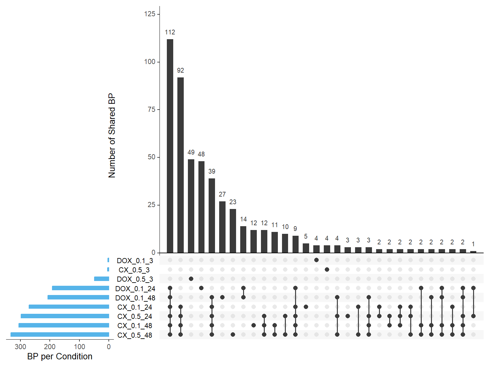
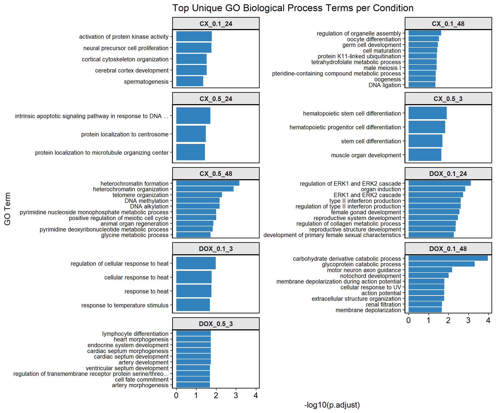

Overlap of GO Terms in DEGs
Last updated: 2025-06-02
Checks: 6 1
Knit directory: Paul_CX_2025/
This reproducible R Markdown analysis was created with workflowr (version 1.7.1). The Checks tab describes the reproducibility checks that were applied when the results were created. The Past versions tab lists the development history.
The R Markdown file has unstaged changes. To know which version of
the R Markdown file created these results, you’ll want to first commit
it to the Git repo. If you’re still working on the analysis, you can
ignore this warning. When you’re finished, you can run
wflow_publish to commit the R Markdown file and build the
HTML.
Great job! The global environment was empty. Objects defined in the global environment can affect the analysis in your R Markdown file in unknown ways. For reproduciblity it’s best to always run the code in an empty environment.
The command set.seed(20250129) was run prior to running
the code in the R Markdown file. Setting a seed ensures that any results
that rely on randomness, e.g. subsampling or permutations, are
reproducible.
Great job! Recording the operating system, R version, and package versions is critical for reproducibility.
Nice! There were no cached chunks for this analysis, so you can be confident that you successfully produced the results during this run.
Great job! Using relative paths to the files within your workflowr project makes it easier to run your code on other machines.
Great! You are using Git for version control. Tracking code development and connecting the code version to the results is critical for reproducibility.
The results in this page were generated with repository version c5f10c4. See the Past versions tab to see a history of the changes made to the R Markdown and HTML files.
Note that you need to be careful to ensure that all relevant files for
the analysis have been committed to Git prior to generating the results
(you can use wflow_publish or
wflow_git_commit). workflowr only checks the R Markdown
file, but you know if there are other scripts or data files that it
depends on. Below is the status of the Git repository when the results
were generated:
Ignored files:
Ignored: .RData
Ignored: .Rhistory
Ignored: .Rproj.user/
Ignored: 0.1 box.svg
Ignored: Rplot04.svg
Ignored: analysis/Corrmotif_Conc.html
Untracked files:
Untracked: 0.1 density.svg
Untracked: 0.1.emf
Untracked: 0.1.svg
Untracked: 0.5 box.svg
Untracked: 0.5 density.svg
Untracked: 0.5.svg
Untracked: Additional/
Untracked: Autosome factors.svg
Untracked: CX_5461_Pattern_Genes_24hr.csv
Untracked: CX_5461_Pattern_Genes_3hr.csv
Untracked: Cell viability box plot.svg
Untracked: DEG GO terms.svg
Untracked: DNA damage associated GO terms.svg
Untracked: DRC1.svg
Untracked: Figure 1.jpeg
Untracked: Figure 1.pdf
Untracked: Figure_CM_Purity.pdf
Untracked: G Quadruplex DEGs.svg
Untracked: PC2 Vs PC3 Autosome.svg
Untracked: PCA autosome.svg
Untracked: Rplot 18.svg
Untracked: Rplot.svg
Untracked: Rplot01.svg
Untracked: Rplot02.svg
Untracked: Rplot03.svg
Untracked: Rplot05.svg
Untracked: Rplot06.svg
Untracked: Rplot07.svg
Untracked: Rplot08.jpeg
Untracked: Rplot08.svg
Untracked: Rplot09.svg
Untracked: Rplot10.svg
Untracked: Rplot11.svg
Untracked: Rplot12.svg
Untracked: Rplot13.svg
Untracked: Rplot14.svg
Untracked: Rplot15.svg
Untracked: Rplot16.svg
Untracked: Rplot17.svg
Untracked: Rplot18.svg
Untracked: Rplot19.svg
Untracked: Rplot20.svg
Untracked: Rplot21.svg
Untracked: Rplot22.svg
Untracked: Rplot23.svg
Untracked: Rplot24.svg
Untracked: TOP2B.bed
Untracked: TS HPA (Violin).svg
Untracked: TS HPA.svg
Untracked: TS_HA.svg
Untracked: TS_HV.svg
Untracked: Violin HA.svg
Untracked: Violin HV (CX vs DOX).svg
Untracked: Violin HV.svg
Untracked: data/AF.csv
Untracked: data/AF_Mapped.csv
Untracked: data/AF_genes.csv
Untracked: data/Annotated_DOX_Gene_Table.csv
Untracked: data/BP/
Untracked: data/CAD_genes.csv
Untracked: data/Cardiotox.csv
Untracked: data/Cardiotox_mapped.csv
Untracked: data/Corrmotif_GO/
Untracked: data/DOX_Vald.csv
Untracked: data/DOX_Vald_Mapped.csv
Untracked: data/DOX_alt.csv
Untracked: data/Entrez_Cardiotox.csv
Untracked: data/Entrez_Cardiotox_Mapped.csv
Untracked: data/GWAS.xlsx
Untracked: data/GWAS_SNPs.bed
Untracked: data/HF.csv
Untracked: data/HF_Mapped.csv
Untracked: data/HF_genes.csv
Untracked: data/Hypertension_genes.csv
Untracked: data/MI_genes.csv
Untracked: data/P53_Target_mapped.csv
Untracked: data/Sample_annotated.csv
Untracked: data/Samples.csv
Untracked: data/Samples.xlsx
Untracked: data/TOP2A.bed
Untracked: data/TOP2A_target.csv
Untracked: data/TOP2A_target_lit.csv
Untracked: data/TOP2A_target_lit_mapped.csv
Untracked: data/TOP2A_target_mapped.csv
Untracked: data/TOP2B.bed
Untracked: data/TOP2B_target.csv
Untracked: data/TOP2B_target_heatmap.csv
Untracked: data/TOP2B_target_heatmap_mapped.csv
Untracked: data/TOP2B_target_mapped.csv
Untracked: data/TS.csv
Untracked: data/TS_HPA.csv
Untracked: data/TS_HPA_mapped.csv
Untracked: data/Toptable_CX_0.1_24.csv
Untracked: data/Toptable_CX_0.1_3.csv
Untracked: data/Toptable_CX_0.1_48.csv
Untracked: data/Toptable_CX_0.5_24.csv
Untracked: data/Toptable_CX_0.5_3.csv
Untracked: data/Toptable_CX_0.5_48.csv
Untracked: data/Toptable_DOX_0.1_24.csv
Untracked: data/Toptable_DOX_0.1_3.csv
Untracked: data/Toptable_DOX_0.1_48.csv
Untracked: data/Toptable_DOX_0.5_24.csv
Untracked: data/Toptable_DOX_0.5_3.csv
Untracked: data/Toptable_DOX_0.5_48.csv
Untracked: data/count.tsv
Untracked: data/ts_data_mapped
Untracked: results/
Untracked: run_bedtools.bat
Unstaged changes:
Deleted: analysis/Actox.Rmd
Modified: analysis/Overlap_GO_DEG.Rmd
Modified: data/DOX_0.5_48 (Combined).csv
Modified: data/Total_number_of_Mapped_reads_by_Individuals.csv
Modified: data/count.csv
Note that any generated files, e.g. HTML, png, CSS, etc., are not included in this status report because it is ok for generated content to have uncommitted changes.
These are the previous versions of the repository in which changes were
made to the R Markdown (analysis/Overlap_GO_DEG.Rmd) and
HTML (docs/Overlap_GO_DEG.html) files. If you’ve configured
a remote Git repository (see ?wflow_git_remote), click on
the hyperlinks in the table below to view the files as they were in that
past version.
| File | Version | Author | Date | Message |
|---|---|---|---|---|
| Rmd | d82f62c | sayanpaul01 | 2025-05-23 | COmmit |
| html | d82f62c | sayanpaul01 | 2025-05-23 | COmmit |
| html | bb4b782 | sayanpaul01 | 2025-02-20 | Build site. |
| html | 2e99243 | sayanpaul01 | 2025-02-20 | Build site. |
| Rmd | 7f9dc02 | sayanpaul01 | 2025-02-20 | Added Overlap of GO Terms in DEGs and updated index |
📌 Load Required Libraries
library(ggVennDiagram)
library(ggplot2)
library(dplyr)📌 Read and Process GO Terms
# Load GO term data for different conditions
# 📦 Load Required Library
library(dplyr)
# 📁 Load GO Term Enrichment Data (Filtered for p.adjust < 0.05)
CX_0.1_24_GO <- read.csv("data/BP/Combined_Terms/GO_All_CX_0.1_24.csv")
CX_0.1_48_GO <- read.csv("data/BP/Combined_Terms/GO_All_CX_0.1_48.csv")
CX_0.5_3_GO <- read.csv("data/BP/Combined_Terms/GO_All_CX_0.5_3.csv")
CX_0.5_24_GO <- read.csv("data/BP/Combined_Terms/GO_All_CX_0.5_24.csv")
CX_0.5_48_GO <- read.csv("data/BP/Combined_Terms/GO_All_CX_0.5_48.csv")
DOX_0.1_3_GO <- read.csv("data/BP/Combined_Terms/GO_All_DOX_0.1_3.csv")
DOX_0.1_24_GO <- read.csv("data/BP/Combined_Terms/GO_All_DOX_0.1_24.csv")
DOX_0.1_48_GO <- read.csv("data/BP/Combined_Terms/GO_All_DOX_0.1_48.csv")
DOX_0.5_3_GO <- read.csv("data/BP/Combined_Terms/GO_All_DOX_0.5_3.csv")
DOX_0.5_24_GO <- read.csv("data/BP/Combined_Terms/GO_All_DOX_0.5_24.csv")
DOX_0.5_48_GO <- read.csv("data/BP/Combined_Terms/GO_All_DOX_0.5_48.csv")
# ✅ Extract Significant GO Term IDs (p.adjust < 0.05)
DEG2_GO <- CX_0.1_24_GO %>% filter(p.adjust < 0.05) %>% pull(ID)
DEG3_GO <- CX_0.1_48_GO %>% filter(p.adjust < 0.05) %>% pull(ID)
DEG4_GO <- CX_0.5_3_GO %>% filter(p.adjust < 0.05) %>% pull(ID)
DEG5_GO <- CX_0.5_24_GO %>% filter(p.adjust < 0.05) %>% pull(ID)
DEG6_GO <- CX_0.5_48_GO %>% filter(p.adjust < 0.05) %>% pull(ID)
DEG7_GO <- DOX_0.1_3_GO %>% filter(p.adjust < 0.05) %>% pull(ID)
DEG8_GO <- DOX_0.1_24_GO %>% filter(p.adjust < 0.05) %>% pull(ID)
DEG9_GO <- DOX_0.1_48_GO %>% filter(p.adjust < 0.05) %>% pull(ID)
DEG10_GO <- DOX_0.5_3_GO %>% filter(p.adjust < 0.05) %>% pull(ID)
DEG11_GO <- DOX_0.5_24_GO %>% filter(p.adjust < 0.05) %>% pull(ID)
DEG12_GO <- DOX_0.5_48_GO %>% filter(p.adjust < 0.05) %>% pull(ID)📌 Overlap of GO Terms across the drugs
📌 Overlap of GO Terms in CX-5461 vs VEH
CX_Datasets <- list(
"CX_0.1_24" = DEG2_GO,
"CX_0.1_48" = DEG3_GO,
"CX_0.5_3" = DEG4_GO,
"CX_0.5_24" = DEG5_GO,
"CX_0.5_48" = DEG6_GO
)
ggVennDiagram(CX_Datasets, label = "count") +
theme(
plot.title = element_text(size = 16, face = "bold"),
legend.title = element_text(size = 12, face = "bold"),
legend.text = element_text(size = 10)
) +
labs(title = "CX-5461 GO Term Overlap")
📌 Overlap of GO Terms in DOX vs VEH
DOX_Datasets <- list(
"DOX_0.1_3" = DEG7_GO,
"DOX_0.1_24" = DEG8_GO,
"DOX_0.1_48" = DEG9_GO,
"DOX_0.5_3" = DEG10_GO,
"DOX_0.5_24" = DEG11_GO,
"DOX_0.5_48" = DEG12_GO
)
ggVennDiagram(DOX_Datasets, label = "count") +
theme(
plot.title = element_text(size = 16, face = "bold"),
legend.title = element_text(size = 12, face = "bold"),
legend.text = element_text(size = 10)
) +
labs(title = "DOX GO Term Overlap")
📌 Overlap of GO Terms across concentrations
📌 0.1 µM Concentration
Concentration_0_1 <- list(
"CX_0.1_24" = DEG2_GO,
"CX_0.1_48" = DEG3_GO,
"DOX_0.1_3" = DEG7_GO,
"DOX_0.1_24" = DEG8_GO,
"DOX_0.1_48" = DEG9_GO
)
ggVennDiagram(Concentration_0_1, label = "count") +
theme(
plot.title = element_text(size = 16, face = "bold"),
legend.title = element_text(size = 12, face = "bold"),
legend.text = element_text(size = 10)
) +
labs(title = "0.1 µM GO Term Overlap")
📌 0.5 µM Concentration
Concentration_0_5 <- list(
"CX_0.5_3" = DEG4_GO,
"CX_0.5_24" = DEG5_GO,
"CX_0.5_48" = DEG6_GO,
"DOX_0.5_3" = DEG10_GO,
"DOX_0.5_24" = DEG11_GO,
"DOX_0.5_48" = DEG12_GO
)
ggVennDiagram(Concentration_0_5, label = "count") +
theme(
plot.title = element_text(size = 16, face = "bold"),
legend.title = element_text(size = 12, face = "bold"),
legend.text = element_text(size = 10)
) +
labs(title = "0.5 µM GO Term Overlap")
📌 Overlap of GO Terms Across Timepoints
📌3 Hours
Timepoint_3hrs <- list(
"CX_0.5_3" = DEG4_GO,
"DOX_0.1_3" = DEG7_GO,
"DOX_0.5_3" = DEG10_GO
)
ggVennDiagram(Timepoint_3hrs, label = "count") +
theme(
plot.title = element_text(size = 16, face = "bold"),
legend.title = element_text(size = 12, face = "bold"),
legend.text = element_text(size = 10)
) +
labs(title = "3 Hours GO Term Overlap")
📌24 Hours
Timepoint_24hrs <- list(
"CX_0.1_24" = DEG2_GO,
"CX_0.5_24" = DEG5_GO,
"DOX_0.1_24" = DEG8_GO,
"DOX_0.5_24" = DEG11_GO
)
ggVennDiagram(Timepoint_24hrs, label = "count") +
theme(
plot.title = element_text(size = 16, face = "bold"),
legend.title = element_text(size = 12, face = "bold"),
legend.text = element_text(size = 10)
) +
labs(title = "24 Hours GO Term Overlap")
📌48 Hours
Timepoint_48hrs <- list(
"CX_0.1_48" = DEG3_GO,
"CX_0.5_48" = DEG6_GO,
"DOX_0.1_48" = DEG9_GO,
"DOX_0.5_48" = DEG12_GO
)
ggVennDiagram(Timepoint_48hrs, label = "count") +
theme(
plot.title = element_text(size = 16, face = "bold"),
legend.title = element_text(size = 12, face = "bold"),
legend.text = element_text(size = 10)
) +
labs(title = "48 Hours GO Term Overlap")
📌Overlapping of BP terms across all samples Upset plot
# 📦 Load Required Libraries
library(UpSetR)
library(dplyr)
library(tidyr)
# ✅ Define GO Enrichment Files (Combined_Terms structure, but now All_Terms paths)
go_files <- list(
"CX_0.1_24" = "data/BP/All_Terms/GO_BP_CX_0.1_24.csv",
"CX_0.1_48" = "data/BP/All_Terms/GO_BP_CX_0.1_48.csv",
"CX_0.5_3" = "data/BP/All_Terms/GO_BP_CX_0.5_3.csv",
"CX_0.5_24" = "data/BP/All_Terms/GO_BP_CX_0.5_24.csv",
"CX_0.5_48" = "data/BP/All_Terms/GO_BP_CX_0.5_48.csv",
"DOX_0.1_3" = "data/BP/All_Terms/GO_BP_DOX_0.1_3.csv",
"DOX_0.1_24" = "data/BP/All_Terms/GO_BP_DOX_0.1_24.csv",
"DOX_0.1_48" = "data/BP/All_Terms/GO_BP_DOX_0.1_48.csv",
"DOX_0.5_3" = "data/BP/All_Terms/GO_BP_DOX_0.5_3.csv"
)
# ✅ Read and filter (p.adjust < 0.05), extract GO term IDs
gene_sets <- lapply(go_files, function(file) {
read.csv(file) %>%
filter(p.adjust < 0.05) %>%
pull(ID) %>%
as.character()
})
# 🧮 Build binary matrix
all_ids <- unique(unlist(gene_sets))
binary_matrix <- data.frame(GO_ID = all_ids)
for (name in names(gene_sets)) {
binary_matrix[[name]] <- as.integer(binary_matrix$GO_ID %in% gene_sets[[name]])
}
# ✅ Prepare matrix for UpSetR
upset_input <- binary_matrix[, -1]
colnames(upset_input) <- names(gene_sets)
# 🎯 Plot UpSet
par(mar = c(10, 4, 2, 2))
upset(upset_input,
sets = colnames(upset_input),
order.by = "freq",
sets.bar.color = "#56B4E9",
mainbar.y.label = "Number of Shared BP (p.adjust < 0.05)",
sets.x.label = "BP per Condition",
text.scale = 1.2,
nintersects = 30)
| Version | Author | Date |
|---|---|---|
| d82f62c | sayanpaul01 | 2025-05-23 |
📌Identifying Unique GO terms
# 📦 Load Required Libraries
# 📦 Load Required Libraries
library(dplyr)
# ✅ Step 1: Define File Paths for All_Terms
go_files <- list(
"CX_0.1_24" = "data/BP/All_Terms/GO_BP_CX_0.1_24.csv",
"CX_0.1_48" = "data/BP/All_Terms/GO_BP_CX_0.1_48.csv",
"CX_0.5_3" = "data/BP/All_Terms/GO_BP_CX_0.5_3.csv",
"CX_0.5_24" = "data/BP/All_Terms/GO_BP_CX_0.5_24.csv",
"CX_0.5_48" = "data/BP/All_Terms/GO_BP_CX_0.5_48.csv",
"DOX_0.1_3" = "data/BP/All_Terms/GO_BP_DOX_0.1_3.csv",
"DOX_0.1_24" = "data/BP/All_Terms/GO_BP_DOX_0.1_24.csv",
"DOX_0.1_48" = "data/BP/All_Terms/GO_BP_DOX_0.1_48.csv",
"DOX_0.5_3" = "data/BP/All_Terms/GO_BP_DOX_0.5_3.csv"
)
# ✅ Step 2: Read and Filter Each File (p.adjust < 0.05)
go_data <- lapply(go_files, function(file) {
df <- read.csv(file)
df %>% filter(p.adjust < 0.05)
})
# ✅ Step 3: Identify Unique GO Terms in Each Condition
unique_go_terms <- list()
for (set_name in names(go_data)) {
current_ids <- go_data[[set_name]]$ID
other_ids <- unlist(lapply(go_data[names(go_data) != set_name], `[[`, "ID"), use.names = FALSE)
unique_ids <- setdiff(current_ids, other_ids)
if (length(unique_ids) > 0) {
unique_go_terms[[set_name]] <- unique_ids
}
}
# ✅ Step 4: Map Unique IDs to Description and p.adjust
mapped_unique_go_terms <- list()
for (set_name in names(unique_go_terms)) {
df <- go_data[[set_name]]
unique_ids <- unique_go_terms[[set_name]]
mapped_df <- df %>%
filter(ID %in% unique_ids) %>%
dplyr::select(GO_ID = ID, Function = Description, p.adjust)
mapped_unique_go_terms[[set_name]] <- mapped_df
}
# 🎯 Final Output: List of data.frames with GO_ID, Function, and p.adjust
mapped_unique_go_terms$CX_0.1_24
GO_ID Function p.adjust
1 GO:0032147 activation of protein kinase activity 0.01634492
2 GO:0061351 neural precursor cell proliferation 0.01728494
3 GO:0030865 cortical cytoskeleton organization 0.02949342
4 GO:0021987 cerebral cortex development 0.02957858
5 GO:0007283 spermatogenesis 0.04378504
$CX_0.1_48
GO_ID Function
1 GO:1902115 regulation of organelle assembly
2 GO:0009994 oocyte differentiation
3 GO:0007281 germ cell development
4 GO:0048469 cell maturation
5 GO:0070979 protein K11-linked ubiquitination
6 GO:0007141 male meiosis I
7 GO:0046653 tetrahydrofolate metabolic process
8 GO:0042558 pteridine-containing compound metabolic process
9 GO:0048477 oogenesis
10 GO:0006266 DNA ligation
11 GO:0009163 nucleoside biosynthetic process
12 GO:0034404 nucleobase-containing small molecule biosynthetic process
p.adjust
1 0.02367495
2 0.03009502
3 0.03449739
4 0.03686756
5 0.03897505
6 0.03928009
7 0.03928009
8 0.04342249
9 0.04369792
10 0.04621861
11 0.04621861
12 0.04621861
$CX_0.5_3
GO_ID Function p.adjust
1 GO:0060218 hematopoietic stem cell differentiation 0.01231022
2 GO:0002244 hematopoietic progenitor cell differentiation 0.01449870
3 GO:0048863 stem cell differentiation 0.02000410
4 GO:0007517 muscle organ development 0.02281494
$CX_0.5_24
GO_ID Function
1 GO:0008630 intrinsic apoptotic signaling pathway in response to DNA damage
2 GO:0071539 protein localization to centrosome
3 GO:1905508 protein localization to microtubule organizing center
p.adjust
1 0.01956480
2 0.03302088
3 0.03630493
$CX_0.5_48
GO_ID
1 GO:0031507
2 GO:0070828
3 GO:0032200
4 GO:0006305
5 GO:0006306
6 GO:0009129
7 GO:0051446
8 GO:0031100
9 GO:0009219
10 GO:0006544
11 GO:0040029
12 GO:0042276
13 GO:0140719
14 GO:2001032
15 GO:0009116
16 GO:0002562
17 GO:0016444
18 GO:0045911
19 GO:0051444
20 GO:0090399
21 GO:0031571
22 GO:0044819
23 GO:0045739
Function
1 heterochromatin formation
2 heterochromatin organization
3 telomere organization
4 DNA alkylation
5 DNA methylation
6 pyrimidine nucleoside monophosphate metabolic process
7 positive regulation of meiotic cell cycle
8 animal organ regeneration
9 pyrimidine deoxyribonucleotide metabolic process
10 glycine metabolic process
11 epigenetic regulation of gene expression
12 error-prone translesion synthesis
13 constitutive heterochromatin formation
14 regulation of double-strand break repair via nonhomologous end joining
15 nucleoside metabolic process
16 somatic diversification of immune receptors via germline recombination within a single locus
17 somatic cell DNA recombination
18 positive regulation of DNA recombination
19 negative regulation of ubiquitin-protein transferase activity
20 replicative senescence
21 mitotic G1 DNA damage checkpoint signaling
22 mitotic G1/S transition checkpoint signaling
23 positive regulation of DNA repair
p.adjust
1 0.0006775733
2 0.0013367179
3 0.0050904693
4 0.0067535333
5 0.0067535333
6 0.0098485800
7 0.0098485800
8 0.0137145772
9 0.0148082118
10 0.0188576687
11 0.0247093018
12 0.0247093018
13 0.0315207935
14 0.0380501591
15 0.0392803558
16 0.0402832146
17 0.0402832146
18 0.0402832146
19 0.0467989120
20 0.0467989120
21 0.0477331220
22 0.0477331220
23 0.0489508320
$DOX_0.1_3
GO_ID Function p.adjust
1 GO:1900034 regulation of cellular response to heat 0.01049825
2 GO:0034605 cellular response to heat 0.01670754
3 GO:0009408 response to heat 0.01723368
4 GO:0009266 response to temperature stimulus 0.02025016
$DOX_0.1_24
GO_ID
1 GO:0070372
2 GO:0001759
3 GO:0070371
4 GO:0032609
5 GO:0032649
6 GO:0008585
7 GO:0061458
8 GO:0010712
9 GO:0048608
10 GO:0046545
11 GO:0032729
12 GO:0010818
13 GO:0070374
14 GO:0040008
15 GO:0014856
16 GO:0046660
17 GO:0033002
18 GO:0042327
19 GO:0010714
20 GO:0009123
21 GO:0032965
22 GO:0048771
23 GO:0031128
24 GO:0032733
25 GO:0009156
26 GO:0002250
27 GO:0007169
28 GO:0003156
29 GO:0032967
30 GO:0001934
31 GO:0043410
32 GO:0048247
33 GO:0009410
34 GO:0110110
35 GO:0031952
36 GO:0002460
37 GO:0009161
38 GO:0034103
39 GO:0050869
40 GO:0030330
41 GO:0060485
42 GO:0002706
43 GO:0003014
44 GO:1901652
45 GO:0030316
46 GO:0030856
47 GO:0008217
48 GO:2000242
Function
1 regulation of ERK1 and ERK2 cascade
2 organ induction
3 ERK1 and ERK2 cascade
4 type II interferon production
5 regulation of type II interferon production
6 female gonad development
7 reproductive system development
8 regulation of collagen metabolic process
9 reproductive structure development
10 development of primary female sexual characteristics
11 positive regulation of type II interferon production
12 T cell chemotaxis
13 positive regulation of ERK1 and ERK2 cascade
14 regulation of growth
15 skeletal muscle cell proliferation
16 female sex differentiation
17 muscle cell proliferation
18 positive regulation of phosphorylation
19 positive regulation of collagen metabolic process
20 nucleoside monophosphate metabolic process
21 regulation of collagen biosynthetic process
22 tissue remodeling
23 developmental induction
24 positive regulation of interleukin-10 production
25 ribonucleoside monophosphate biosynthetic process
26 adaptive immune response
27 transmembrane receptor protein tyrosine kinase signaling pathway
28 regulation of animal organ formation
29 positive regulation of collagen biosynthetic process
30 positive regulation of protein phosphorylation
31 positive regulation of MAPK cascade
32 lymphocyte chemotaxis
33 response to xenobiotic stimulus
34 positive regulation of animal organ morphogenesis
35 regulation of protein autophosphorylation
36 adaptive immune response based on somatic recombination of immune receptors built from immunoglobulin superfamily domains
37 ribonucleoside monophosphate metabolic process
38 regulation of tissue remodeling
39 negative regulation of B cell activation
40 DNA damage response, signal transduction by p53 class mediator
41 mesenchyme development
42 regulation of lymphocyte mediated immunity
43 renal system process
44 response to peptide
45 osteoclast differentiation
46 regulation of epithelial cell differentiation
47 regulation of blood pressure
48 negative regulation of reproductive process
p.adjust
1 0.0007516882
2 0.0014565624
3 0.0018451390
4 0.0024696279
5 0.0024696279
6 0.0028351080
7 0.0033494853
8 0.0042734147
9 0.0043969608
10 0.0053562247
11 0.0056220914
12 0.0060875264
13 0.0064855995
14 0.0064855995
15 0.0066569208
16 0.0073987218
17 0.0086612503
18 0.0089181320
19 0.0100403845
20 0.0105322006
21 0.0114881038
22 0.0117167502
23 0.0122542224
24 0.0122965743
25 0.0139144050
26 0.0149844616
27 0.0150191959
28 0.0173895646
29 0.0173895646
30 0.0173895646
31 0.0178954330
32 0.0207281068
33 0.0207281068
34 0.0216769106
35 0.0222648297
36 0.0241443316
37 0.0275870140
38 0.0306074768
39 0.0309911358
40 0.0349368983
41 0.0388673988
42 0.0397535216
43 0.0440793528
44 0.0442630140
45 0.0472091401
46 0.0489826882
47 0.0492409369
48 0.0494289130
$DOX_0.1_48
GO_ID
1 GO:1901136
2 GO:0006516
3 GO:0008045
4 GO:0030903
5 GO:0086010
6 GO:0034644
7 GO:0001508
8 GO:0043062
9 GO:0097205
10 GO:0051899
11 GO:0002377
12 GO:0030198
13 GO:0008016
14 GO:0061337
15 GO:0045229
16 GO:0003094
17 GO:0006026
18 GO:0044409
19 GO:0046718
20 GO:0006027
21 GO:0071482
22 GO:0099638
23 GO:0086012
24 GO:0002381
25 GO:0001570
26 GO:0086001
27 GO:0086002
Function
1 carbohydrate derivative catabolic process
2 glycoprotein catabolic process
3 motor neuron axon guidance
4 notochord development
5 membrane depolarization during action potential
6 cellular response to UV
7 action potential
8 extracellular structure organization
9 renal filtration
10 membrane depolarization
11 immunoglobulin production
12 extracellular matrix organization
13 regulation of heart contraction
14 cardiac conduction
15 external encapsulating structure organization
16 glomerular filtration
17 aminoglycan catabolic process
18 entry into host
19 viral entry into host cell
20 glycosaminoglycan catabolic process
21 cellular response to light stimulus
22 endosome to plasma membrane protein transport
23 membrane depolarization during cardiac muscle cell action potential
24 immunoglobulin production involved in immunoglobulin-mediated immune response
25 vasculogenesis
26 cardiac muscle cell action potential
27 cardiac muscle cell action potential involved in contraction
p.adjust
1 0.0001051443
2 0.0004795775
3 0.0066131033
4 0.0099227357
5 0.0161688486
6 0.0161688486
7 0.0164282137
8 0.0167556978
9 0.0211116001
10 0.0220454960
11 0.0222151167
12 0.0228958876
13 0.0252354205
14 0.0254108130
15 0.0255011743
16 0.0262879898
17 0.0262879898
18 0.0272494111
19 0.0290812554
20 0.0329595937
21 0.0405838543
22 0.0423210689
23 0.0426459913
24 0.0428790400
25 0.0430052946
26 0.0430052946
27 0.0430680536
$DOX_0.5_3
GO_ID
1 GO:0060411
2 GO:0003007
3 GO:0060840
4 GO:0035270
5 GO:0030098
6 GO:0003279
7 GO:0045165
8 GO:0090092
9 GO:0003281
10 GO:0048844
11 GO:0003151
12 GO:1903131
13 GO:0071559
14 GO:0060419
15 GO:0017015
16 GO:1903844
17 GO:0035019
18 GO:0035904
19 GO:0014706
20 GO:0030217
21 GO:0071560
22 GO:0060412
23 GO:0048738
24 GO:0003170
25 GO:0055017
26 GO:0035265
27 GO:0060976
28 GO:0046649
29 GO:0002521
30 GO:1902105
31 GO:0030278
32 GO:1903706
33 GO:0035051
34 GO:0042110
35 GO:0002065
36 GO:0033689
37 GO:0003181
38 GO:0009896
39 GO:0035909
40 GO:0007179
41 GO:0017148
42 GO:0048568
43 GO:0002067
44 GO:0060420
45 GO:0060537
46 GO:0005978
47 GO:0009250
48 GO:0045785
49 GO:0003171
Function
1 cardiac septum morphogenesis
2 heart morphogenesis
3 artery development
4 endocrine system development
5 lymphocyte differentiation
6 cardiac septum development
7 cell fate commitment
8 regulation of transmembrane receptor protein serine/threonine kinase signaling pathway
9 ventricular septum development
10 artery morphogenesis
11 outflow tract morphogenesis
12 mononuclear cell differentiation
13 response to transforming growth factor beta
14 heart growth
15 regulation of transforming growth factor beta receptor signaling pathway
16 regulation of cellular response to transforming growth factor beta stimulus
17 somatic stem cell population maintenance
18 aorta development
19 striated muscle tissue development
20 T cell differentiation
21 cellular response to transforming growth factor beta stimulus
22 ventricular septum morphogenesis
23 cardiac muscle tissue development
24 heart valve development
25 cardiac muscle tissue growth
26 organ growth
27 coronary vasculature development
28 lymphocyte activation
29 leukocyte differentiation
30 regulation of leukocyte differentiation
31 regulation of ossification
32 regulation of hemopoiesis
33 cardiocyte differentiation
34 T cell activation
35 columnar/cuboidal epithelial cell differentiation
36 negative regulation of osteoblast proliferation
37 atrioventricular valve morphogenesis
38 positive regulation of catabolic process
39 aorta morphogenesis
40 transforming growth factor beta receptor signaling pathway
41 negative regulation of translation
42 embryonic organ development
43 glandular epithelial cell differentiation
44 regulation of heart growth
45 muscle tissue development
46 glycogen biosynthetic process
47 glucan biosynthetic process
48 positive regulation of cell adhesion
49 atrioventricular valve development
p.adjust
1 0.01860398
2 0.01860398
3 0.01860398
4 0.01860398
5 0.01860398
6 0.01860398
7 0.02065923
8 0.02065923
9 0.02065923
10 0.02065923
11 0.02103458
12 0.02103458
13 0.02103458
14 0.02144515
15 0.02542938
16 0.02542938
17 0.02542938
18 0.02542938
19 0.02587649
20 0.02658237
21 0.02658237
22 0.02658237
23 0.02658237
24 0.02658237
25 0.02658237
26 0.02672722
27 0.02687238
28 0.02725889
29 0.02804421
30 0.02935587
31 0.03300580
32 0.03337939
33 0.03456539
34 0.03688428
35 0.04054107
36 0.04216232
37 0.04216232
38 0.04216232
39 0.04830795
40 0.04830795
41 0.04830795
42 0.04830795
43 0.04830795
44 0.04830795
45 0.04830795
46 0.04830795
47 0.04830795
48 0.04933983
49 0.04933983📌TOP Unique GO terms
# 📦 Load Required Libraries
library(dplyr)
library(readr)
# ✅ Step 1: Load and Filter GO Term Data (p.adjust < 0.05) from All_Terms
CX_0.1_24_GO <- read_csv("data/BP/All_Terms/GO_BP_CX_0.1_24.csv") %>% filter(p.adjust < 0.05)
CX_0.1_48_GO <- read_csv("data/BP/All_Terms/GO_BP_CX_0.1_48.csv") %>% filter(p.adjust < 0.05)
CX_0.5_3_GO <- read_csv("data/BP/All_Terms/GO_BP_CX_0.5_3.csv") %>% filter(p.adjust < 0.05)
CX_0.5_24_GO <- read_csv("data/BP/All_Terms/GO_BP_CX_0.5_24.csv") %>% filter(p.adjust < 0.05)
CX_0.5_48_GO <- read_csv("data/BP/All_Terms/GO_BP_CX_0.5_48.csv") %>% filter(p.adjust < 0.05)
DOX_0.1_3_GO <- read_csv("data/BP/All_Terms/GO_BP_DOX_0.1_3.csv") %>% filter(p.adjust < 0.05)
DOX_0.1_24_GO <- read_csv("data/BP/All_Terms/GO_BP_DOX_0.1_24.csv") %>% filter(p.adjust < 0.05)
DOX_0.1_48_GO <- read_csv("data/BP/All_Terms/GO_BP_DOX_0.1_48.csv") %>% filter(p.adjust < 0.05)
DOX_0.5_3_GO <- read_csv("data/BP/All_Terms/GO_BP_DOX_0.5_3.csv") %>% filter(p.adjust < 0.05)
# ✅ Step 2: Create Named List of Filtered Data Frames
go_files <- list(
`CX_0.1_24` = CX_0.1_24_GO,
`CX_0.1_48` = CX_0.1_48_GO,
`CX_0.5_3` = CX_0.5_3_GO,
`CX_0.5_24` = CX_0.5_24_GO,
`CX_0.5_48` = CX_0.5_48_GO,
`DOX_0.1_3` = DOX_0.1_3_GO,
`DOX_0.1_24` = DOX_0.1_24_GO,
`DOX_0.1_48` = DOX_0.1_48_GO,
`DOX_0.5_3` = DOX_0.5_3_GO
)
# ✅ Step 3: Identify Unique GO Term IDs per Condition
unique_go_terms <- list()
for (set_name in names(go_files)) {
current_ids <- go_files[[set_name]]$ID
other_ids <- unlist(lapply(go_files[names(go_files) != set_name], `[[`, "ID"), use.names = FALSE)
unique_ids <- setdiff(current_ids, other_ids)
if (length(unique_ids) > 0) {
unique_go_terms[[set_name]] <- unique_ids
}
}
# ✅ Step 4: Map Unique GO IDs to Description and p.adjust
mapped_unique_go_terms <- list()
for (set_name in names(unique_go_terms)) {
source_df <- go_files[[set_name]]
unique_ids <- unique_go_terms[[set_name]]
mapped_df <- source_df %>%
filter(ID %in% unique_ids) %>%
dplyr::select(GO_ID = ID, Function = Description, p.adjust)
if (nrow(mapped_df) > 0) {
mapped_unique_go_terms[[set_name]] <- mapped_df
}
}
# 🎯 Final Output: Named list of data.frames with unique + significant GO terms per condition
mapped_unique_go_terms$CX_0.1_24
# A tibble: 5 × 3
GO_ID Function p.adjust
<chr> <chr> <dbl>
1 GO:0032147 activation of protein kinase activity 0.0163
2 GO:0061351 neural precursor cell proliferation 0.0173
3 GO:0030865 cortical cytoskeleton organization 0.0295
4 GO:0021987 cerebral cortex development 0.0296
5 GO:0007283 spermatogenesis 0.0438
$CX_0.1_48
# A tibble: 12 × 3
GO_ID Function p.adjust
<chr> <chr> <dbl>
1 GO:1902115 regulation of organelle assembly 0.0237
2 GO:0009994 oocyte differentiation 0.0301
3 GO:0007281 germ cell development 0.0345
4 GO:0048469 cell maturation 0.0369
5 GO:0070979 protein K11-linked ubiquitination 0.0390
6 GO:0007141 male meiosis I 0.0393
7 GO:0046653 tetrahydrofolate metabolic process 0.0393
8 GO:0042558 pteridine-containing compound metabolic process 0.0434
9 GO:0048477 oogenesis 0.0437
10 GO:0006266 DNA ligation 0.0462
11 GO:0009163 nucleoside biosynthetic process 0.0462
12 GO:0034404 nucleobase-containing small molecule biosynthetic process 0.0462
$CX_0.5_3
# A tibble: 4 × 3
GO_ID Function p.adjust
<chr> <chr> <dbl>
1 GO:0060218 hematopoietic stem cell differentiation 0.0123
2 GO:0002244 hematopoietic progenitor cell differentiation 0.0145
3 GO:0048863 stem cell differentiation 0.0200
4 GO:0007517 muscle organ development 0.0228
$CX_0.5_24
# A tibble: 3 × 3
GO_ID Function p.adjust
<chr> <chr> <dbl>
1 GO:0008630 intrinsic apoptotic signaling pathway in response to DNA … 0.0196
2 GO:0071539 protein localization to centrosome 0.0330
3 GO:1905508 protein localization to microtubule organizing center 0.0363
$CX_0.5_48
# A tibble: 23 × 3
GO_ID Function p.adjust
<chr> <chr> <dbl>
1 GO:0031507 heterochromatin formation 0.000678
2 GO:0070828 heterochromatin organization 0.00134
3 GO:0032200 telomere organization 0.00509
4 GO:0006305 DNA alkylation 0.00675
5 GO:0006306 DNA methylation 0.00675
6 GO:0009129 pyrimidine nucleoside monophosphate metabolic process 0.00985
7 GO:0051446 positive regulation of meiotic cell cycle 0.00985
8 GO:0031100 animal organ regeneration 0.0137
9 GO:0009219 pyrimidine deoxyribonucleotide metabolic process 0.0148
10 GO:0006544 glycine metabolic process 0.0189
# ℹ 13 more rows
$DOX_0.1_3
# A tibble: 4 × 3
GO_ID Function p.adjust
<chr> <chr> <dbl>
1 GO:1900034 regulation of cellular response to heat 0.0105
2 GO:0034605 cellular response to heat 0.0167
3 GO:0009408 response to heat 0.0172
4 GO:0009266 response to temperature stimulus 0.0203
$DOX_0.1_24
# A tibble: 48 × 3
GO_ID Function p.adjust
<chr> <chr> <dbl>
1 GO:0070372 regulation of ERK1 and ERK2 cascade 0.000752
2 GO:0001759 organ induction 0.00146
3 GO:0070371 ERK1 and ERK2 cascade 0.00185
4 GO:0032609 type II interferon production 0.00247
5 GO:0032649 regulation of type II interferon production 0.00247
6 GO:0008585 female gonad development 0.00284
7 GO:0061458 reproductive system development 0.00335
8 GO:0010712 regulation of collagen metabolic process 0.00427
9 GO:0048608 reproductive structure development 0.00440
10 GO:0046545 development of primary female sexual characteristics 0.00536
# ℹ 38 more rows
$DOX_0.1_48
# A tibble: 27 × 3
GO_ID Function p.adjust
<chr> <chr> <dbl>
1 GO:1901136 carbohydrate derivative catabolic process 0.000105
2 GO:0006516 glycoprotein catabolic process 0.000480
3 GO:0008045 motor neuron axon guidance 0.00661
4 GO:0030903 notochord development 0.00992
5 GO:0086010 membrane depolarization during action potential 0.0162
6 GO:0034644 cellular response to UV 0.0162
7 GO:0001508 action potential 0.0164
8 GO:0043062 extracellular structure organization 0.0168
9 GO:0097205 renal filtration 0.0211
10 GO:0051899 membrane depolarization 0.0220
# ℹ 17 more rows
$DOX_0.5_3
# A tibble: 49 × 3
GO_ID Function p.adjust
<chr> <chr> <dbl>
1 GO:0060411 cardiac septum morphogenesis 0.0186
2 GO:0003007 heart morphogenesis 0.0186
3 GO:0060840 artery development 0.0186
4 GO:0035270 endocrine system development 0.0186
5 GO:0030098 lymphocyte differentiation 0.0186
6 GO:0003279 cardiac septum development 0.0186
7 GO:0045165 cell fate commitment 0.0207
8 GO:0090092 regulation of transmembrane receptor protein serine/thre… 0.0207
9 GO:0003281 ventricular septum development 0.0207
10 GO:0048844 artery morphogenesis 0.0207
# ℹ 39 more rows📌Plot Unique GO terms
# 📦 Load Required Libraries
library(dplyr)
library(ggplot2)
library(ggpubr)
library(stringr)
# 🧾 Assumes: mapped_unique_go_terms is a list of data.frames with GO_ID, Function, p.adjust
# 🔁 Step 1: Extract Top 10 Terms by p.adjust per Condition
plot_data <- list()
for (set_name in names(mapped_unique_go_terms)) {
unique_df <- mapped_unique_go_terms[[set_name]]
if (nrow(unique_df) > 0) {
unique_df <- unique_df %>%
mutate(Sample = set_name,
NegLog10Padj = -log10(p.adjust))
top10 <- unique_df %>%
slice_min(order_by = p.adjust, n = 10, with_ties = FALSE) %>%
dplyr::select(Sample, Function, NegLog10Padj) # fully qualified here
plot_data[[set_name]] <- top10
}
}
# 🔗 Step 2: Combine and Format Labels
plot_df <- bind_rows(plot_data) %>%
mutate(Function = str_trunc(Function, width = 60))
# 🎨 Step 3: Faceted Bar Plot
ggplot(plot_df, aes(x = NegLog10Padj, y = reorder(Function, NegLog10Padj))) +
geom_bar(stat = "identity", fill = "#3182bd") +
facet_wrap(~ Sample, scales = "free_y", ncol = 2, strip.position = "top") +
labs(
x = "-log10(p.adjust)",
y = "GO Term",
title = "Top Unique GO Biological Process Terms per Condition"
) +
theme_pubr(base_size = 14) +
theme(
strip.background = element_rect(colour = "black", fill = "grey90", size = 1),
strip.text = element_text(face = "bold"),
axis.text.y = element_text(size = 10),
panel.border = element_rect(color = "black", fill = NA, size = 1)
)
sessionInfo()R version 4.3.0 (2023-04-21 ucrt)
Platform: x86_64-w64-mingw32/x64 (64-bit)
Running under: Windows 11 x64 (build 26100)
Matrix products: default
locale:
[1] LC_COLLATE=English_United States.utf8
[2] LC_CTYPE=English_United States.utf8
[3] LC_MONETARY=English_United States.utf8
[4] LC_NUMERIC=C
[5] LC_TIME=English_United States.utf8
time zone: America/Chicago
tzcode source: internal
attached base packages:
[1] stats graphics grDevices utils datasets methods base
other attached packages:
[1] stringr_1.5.1 ggpubr_0.6.0 readr_2.1.5
[4] tidyr_1.3.1 UpSetR_1.4.0 dplyr_1.1.4
[7] ggplot2_3.5.2 ggVennDiagram_1.5.2
loaded via a namespace (and not attached):
[1] utf8_1.2.4 sass_0.4.10 generics_0.1.3 rstatix_0.7.2
[5] stringi_1.8.3 hms_1.1.3 digest_0.6.34 magrittr_2.0.3
[9] evaluate_1.0.3 grid_4.3.0 fastmap_1.2.0 rprojroot_2.0.4
[13] workflowr_1.7.1 plyr_1.8.9 jsonlite_2.0.0 whisker_0.4.1
[17] backports_1.5.0 Formula_1.2-5 gridExtra_2.3 promises_1.3.2
[21] purrr_1.0.4 scales_1.3.0 jquerylib_0.1.4 abind_1.4-8
[25] cli_3.6.1 crayon_1.5.3 rlang_1.1.3 bit64_4.6.0-1
[29] munsell_0.5.1 withr_3.0.2 cachem_1.1.0 yaml_2.3.10
[33] parallel_4.3.0 tools_4.3.0 tzdb_0.5.0 ggsignif_0.6.4
[37] colorspace_2.1-0 httpuv_1.6.15 broom_1.0.8 vctrs_0.6.5
[41] R6_2.6.1 lifecycle_1.0.4 git2r_0.36.2 car_3.1-3
[45] bit_4.6.0 fs_1.6.3 vroom_1.6.5 pkgconfig_2.0.3
[49] pillar_1.10.2 bslib_0.9.0 later_1.3.2 gtable_0.3.6
[53] glue_1.7.0 Rcpp_1.0.12 xfun_0.52 tibble_3.2.1
[57] tidyselect_1.2.1 rstudioapi_0.17.1 knitr_1.50 farver_2.1.2
[61] htmltools_0.5.8.1 carData_3.0-5 rmarkdown_2.29 labeling_0.4.3
[65] compiler_4.3.0